驾驶证考试科目一模拟考试2017最新版
1、使用其他机动车号牌、行驶证的一次记3分。
/jiexi/20865.html
2、驾驶有ABS系统的机动车在紧急制动的同时转向可能会发生侧滑。
/jiexi/21435.html
3、行车中遇到执行紧急任务的消防车、救护车、工程救险车时要及时让行。
/jiexi/20731.html
4、驾驶人因服兵役、出国（境）等原因延期审验期间不得驾驶机动车。
/jiexi/20841.html
5、机油压力报警灯持续亮，可边行驶，边观察，等待报警灯自行熄灭。
/jiexi/90069.html
6、驾驶车辆汇入车流时，应提前开启转向灯，保持直线行驶，通过后视镜观察左右情况，确认安全后汇入合流。
/jiexi/21225.html
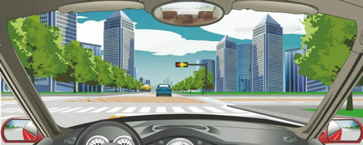
7、在交叉路口遇到这种情况时，要在红灯亮以前加速通过路口。
/jiexi/20703.html
8、造成交通事故后逃逸构成犯罪的人不能申请机动车驾驶证。
/jiexi/20830.html
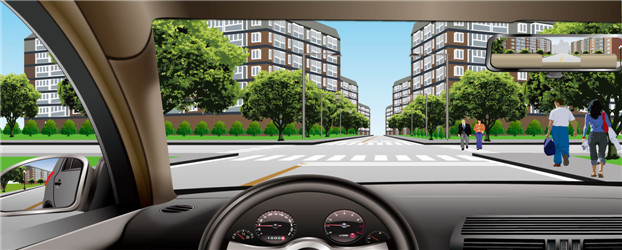
9、如图所示，驾驶机动车遇到这种情况能够加速通过，是因为人行横道没有行人通过。
/jiexi/37903.html
10、牵引故障车，牵引与被牵引的机动车，在行驶中都要开启危险报警闪光灯。
/jiexi/89960.html
11、小型客车行驶在平坦的高速公路上，突然有颠簸感觉时，应迅速降低车速，防止爆胎。
/jiexi/21272.html
12、驾驶机动车在道路上掉头时，应当提前开启左转向灯。
/jiexi/78001.html
13、驾驶机动车行经城市没有列车通过的铁路道口时允许超车。
/jiexi/20667.html
14、机动车发生财产损失交通事故，对应当自行撤离现场而未撤离造成交通堵塞的，可以对驾驶人处以200元罚款。
/jiexi/20826.html
15、变更车道时只需开启转向灯，便可迅速转向驶入相应的行车道。
/jiexi/21224.html
16、这个标志的含义是指示此处设有室内停车场。
/jiexi/22581.html
17、申请人因故不能按照预约时间参加考试的，应当提前一日申请取消预约，对申请人未按照预约考试时间参加考试的，判定该次考试不合格。
/jiexi/22520.html
18、驾驶机动车掉头、转弯、下陡坡时的最高速度不能超过每小时40公里。
/jiexi/20645.html
19、一个合格的驾驶人，不仅表现在技术的娴熟上，更重要的是应该具有良好的驾驶行为习惯和道德修养。
/jiexi/21175.html
20、准驾车型为小型汽车的，可以驾驶小型自动挡载客汽车。
/jiexi/22509.html
21、车辆在冰雪路面紧急制动易产生侧滑，应低速行驶，可利用发动机制动进行减速。
/jiexi/21317.html
22、驾驶机动车在道路上超车时可以不使用转向灯。
/jiexi/20617.html
23、伪造、变造机动车驾驶证构成犯罪的将被依法追究刑事责任。
/jiexi/20562.html
24、驾驶人驾驶有达到报废标准嫌疑机动车上路的，交通警察依法予以拘留。
/jiexi/20817.html
25、不要在驾驶室的前后窗范围内悬挂和放置妨碍驾驶人视线的物品。
/jiexi/20783.html
26、机动车、非机动车和行人实行分道行驶，是为了规范交通秩序，提高通行效率。
/jiexi/37883.html
27、在交叉路口、隧道内均不能倒车。
/jiexi/77964.html
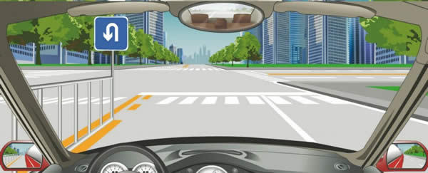
28、在这个路口不能掉头。
/jiexi/20715.html
29、机动车驾驶证遗失、损毁无法辨认时，机动车驾驶人应当向机动车驾驶证核发地车辆管理所申请补发。
/jiexi/22521.html
30、大型客车、牵引车、城市公交车、中型客车、大型货车驾驶人应当每两年提交一次身体条件证明.
/jiexi/20843.html
31、绿灯亮表示前方路口允许机动车通行。
/jiexi/20880.html
32、车辆转弯时应沿道路右侧行驶，不要侵占对方的车道，做到“左转转大弯，右转转小弯”。
/jiexi/21237.html
33、冰雪道路行车，由于积雪对光线的反射，极易造成驾驶人目眩而产生错觉。
/jiexi/21158.html
34、驾驶机动车行经漫水路或者漫水桥时，应当停车察明水情，快速通过。
/jiexi/78045.html
35、科目三道路驾驶技能和安全文明驾驶常识考试满分分别为100分，成绩分别达到80和90分的为合格。
/jiexi/22517.html
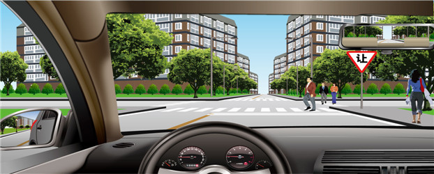
36、如图所示，通过有这个标志的路口时无需减速。
/jiexi/37853.html
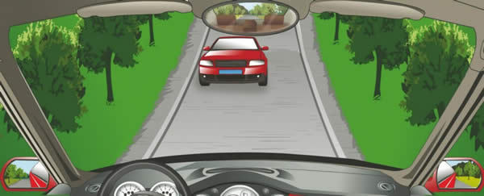
37、未上坡的车辆遇到这种情况让对向下坡车先行。
/jiexi/20675.html
38、行车中从其他道路汇入车流前，应注意观察侧后方车辆的动态。
/jiexi/21227.html
39、驾驶车辆通过人行横道线时，应注意礼让行人。
/jiexi/21228.html
40、夜间行车，要尽量避免超车，确需超车时，可变换远近光灯向前车示意。
/jiexi/21303.html
41、驾驶人违反交通运输管理法规发生重大事故致人死亡且逃逸的，处多少年有期徒刑？
/jiexi/20790.html
42、行至漫水路段时，应当怎样做？
/jiexi/89953.html
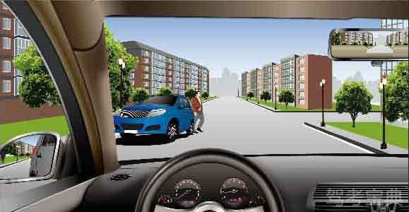
43、如图所示，在这种情况下通过路口，应该怎么行驶？
/jiexi/90043.html
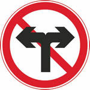
44、这个标志是何含义？
/jiexi/20969.html
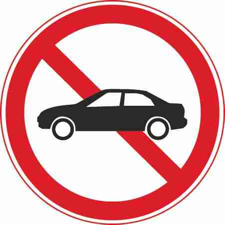
45、这属于哪一种标志？
/jiexi/90000.html
46、车辆通过凹凸路面时，应怎样做？
/jiexi/21210.html
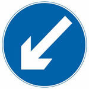
47、这个标志是何含义？
/jiexi/20993.html
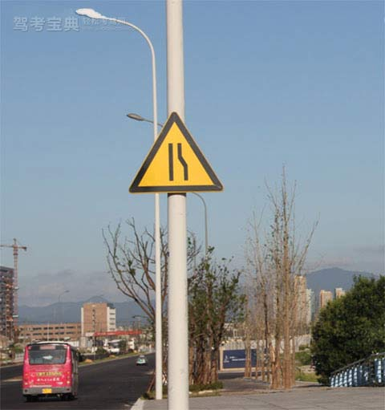
48、当驾驶员看到以下标志是，需减速慢行，是因为什么？
/jiexi/90024.html
49、对驾驶拼装机动车上路行驶的驾驶人，会受到下列哪种处罚？
/jiexi/20567.html
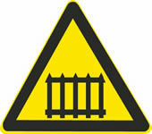
50、这个标志是何含义？
/jiexi/20937.html
51、这个导向箭头是何含义？
/jiexi/21102.html
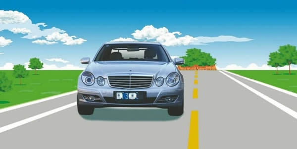
52、驾驶这种机动车上路行驶属于什么行为？
/jiexi/20573.html
53、夜间会车规定150米以内使用近光灯的原因是什么？
/jiexi/37878.html
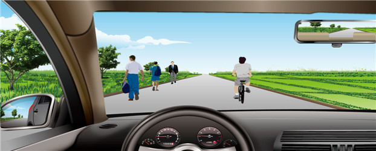
54、如图所示，机动车在这种道路上行驶，在道路中间通行的原因是什么？
/jiexi/37842.html
55、以下哪项行为可构成危险驾驶罪？
/jiexi/77979.html
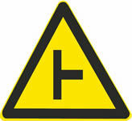
56、这个标志是何含义？
/jiexi/20906.html
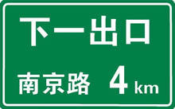
57、这个标志是何含义？
/jiexi/21055.html
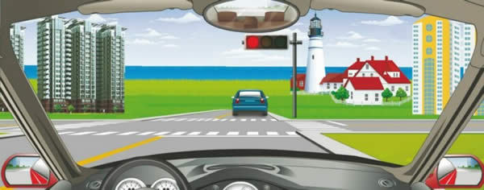
58、驾驶机动车在路口直行遇到这种信号灯应该怎样行驶？
/jiexi/20876.html
59、危险报警闪光灯可用于下列什么场合？
/jiexi/21368.html
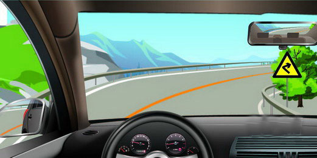
60、如图所示，驾驶机动车遇到这种情况，以下做法正确的是什么？
/jiexi/77924.html
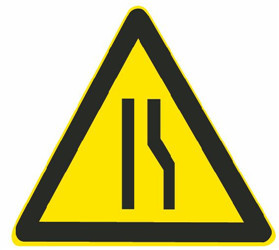
61、这是什么交通标志？
/jiexi/22535.html
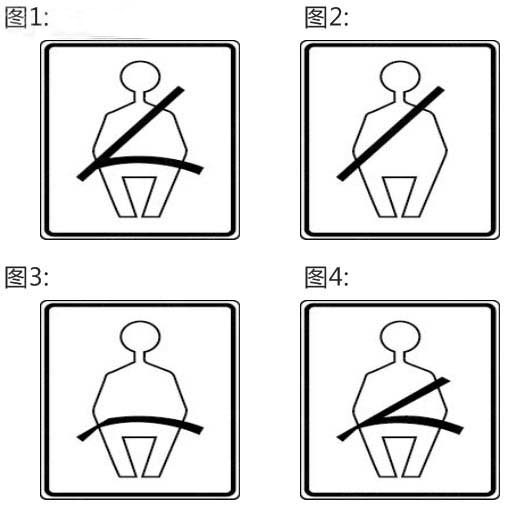
62、以下安全带系法正确的是？
/jiexi/90059.html
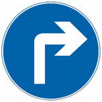
63、这个标志是何含义？
/jiexi/20988.html
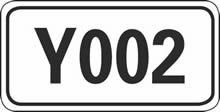
64、这个标志是何含义？
/jiexi/21033.html
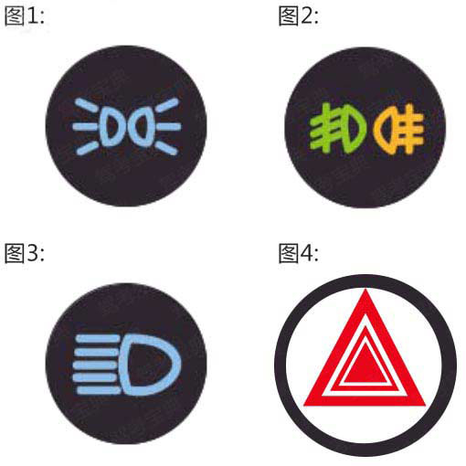
65、车辆发生意外，要及时打开哪个灯?
/jiexi/90079.html
66、防抱死制动系统（ABS）在什么情况下可以最大限度发挥制动器效能?
/jiexi/21432.html
67、上道路行驶的机动车有哪种情形交通警察可依法扣留车辆？
/jiexi/20798.html
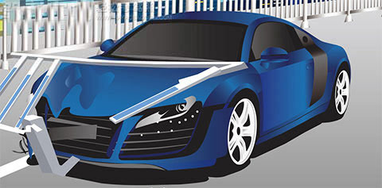
68、遇到这种单方交通事故，应如何处理？
/jiexi/89969.html
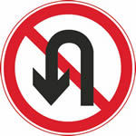
69、这个标志是何含义？
/jiexi/20972.html
70、驾驶人在行车中经过积水路面时，应怎样做？
/jiexi/22587.html
71、提供虚假材料申领驾驶证的申请人会承担下列哪种法律责任？
/jiexi/20848.html
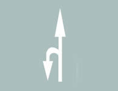
72、这个导向箭头是何含义？
/jiexi/21104.html
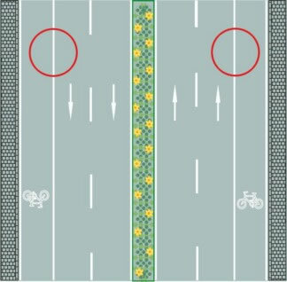
73、路两侧的车行道边缘白色实线是什么含义？
/jiexi/21080.html
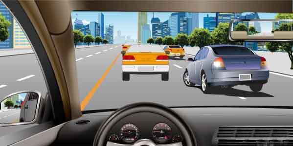
74、如图所示，车辆在拥挤路段排队行驶时，遇到其他车辆强行穿插行驶，以下说法正确的是什么？
/jiexi/90047.html
75、驾驶机动车下陡坡时，以下说法正确的是？
/jiexi/90056.html
76、驾驶机动车遇有前方交叉路口交通阻塞时怎么办？
/jiexi/20700.html
77、初次申领机动车驾驶证的，可以申请下列哪种准驾车型？
/jiexi/22513.html
78、驾驶人行车中看到注意儿童标志的时候，应怎样做？
/jiexi/21218.html
79、在同向4车道高速公路上行车，车速高于每小时110公里的车辆应在哪条车道上行驶？
/jiexi/21257.html
80、安全头枕在发生追尾事故时，能有效保护驾驶人的什么部位？
/jiexi/21426.html
81、实习期驾驶人驾驶机动车上高速公路行驶，以下做法正确的是什么？
/jiexi/77981.html
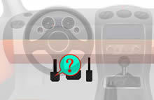
82、这是什么踏板？
/jiexi/21403.html
83、机动车驶进急弯、坡道顶端等影响安全视距的路段时，减速慢行并鸣喇叭示意是为了什么？
/jiexi/90044.html
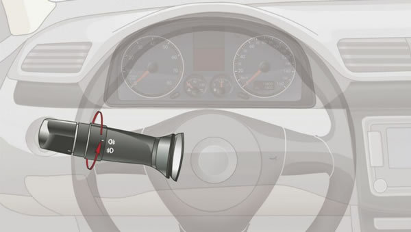
84、旋转开关这一档控制机动车哪个部位？
/jiexi/21415.html
85、驾驶机动车发生交通事故后当事人故意破坏、伪造现场、毁灭证据的，应当承担什么责任？
/jiexi/77916.html
86、下列哪种情况可以向机动车驾驶证核发地车辆管理所申请补发?
/jiexi/78008.html
87、驾驶机动车变更车道时，以下做法正确的是什么？
/jiexi/77920.html
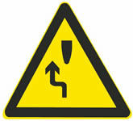
88、这个标志是何含义？
/jiexi/20948.html
89、有下列哪种违法行为的机动车驾驶人将被一次记12分？
/jiexi/20861.html
90、雨天行车，遇撑雨伞和穿雨衣的行人在公路上行走时，应怎样做？
/jiexi/21220.html
91、驾驶人出现下列哪种情况，不得驾驶机动车？
/jiexi/20584.html
92、道路交通安全违法行为累积记分的周期是多长时间？
/jiexi/20582.html
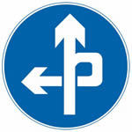
93、这个标志是何含义？
/jiexi/20994.html
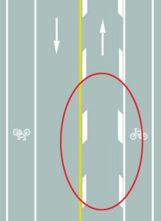
94、路面上的菱形块虚线是何含义？
/jiexi/21135.html
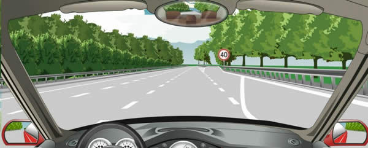
95、驾驶机动车驶离高速公路时，在这个位置怎样行驶？
/jiexi/20762.html
96、公安机关交通管理部门对驾驶人的交通违法行为除依法给予行政处罚外,实行下列哪种制度？
/jiexi/77857.html
97、已注册登记的小型载客汽车有下列哪种情形，所有人不需要办理变更登记？
/jiexi/20872.html
98、遇前方路段车道减少，车辆行驶缓慢，为了保证安全有序应该怎么做？
/jiexi/90046.html
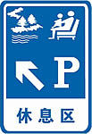
99、这个标志是何含义？
/jiexi/21040.html
100、行驶车道绿灯亮时，但车辆前方人行横道仍有行人行走，应怎样做？
/jiexi/21192.html